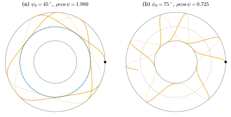
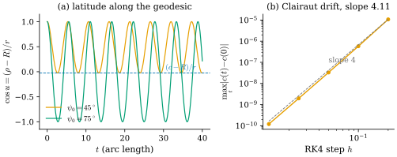

44.5 The Geodesic Equation
Goals
- surface 위 곡선을 따른 covariant derivative를 \(\R^3\)의 미분의 tangent 성분으로 정의하고, geodesic이 “가속도가 \(0\)인 곡선”이라는 것을 Section 44.1의 결과와 잇는다.
- parametrized surface의 Christoffel symbols가 first fundamental form만으로 정해진다는 것을 증명하고, geodesic equation \(\ddot\gamma^k + \sum_{i,j}\Gamma^k_{ij}\dot\gamma^i\dot\gamma^j = 0\)을 유도할 수 있다.
- geodesic equation을 RK4로 풀어 sphere, cylinder, torus of revolution의 geodesic을 계산하고, 보존량(속력, Clairaut 관계)으로 정확성을 확인할 수 있다.
- mesh 위의 tracing과 ODE 풀이라는 두 방법을 비교할 수 있다.
Prerequisites
- Section 44.1: energy의 critical point와 가속도 Proposition 44.1.9, geodesic Remark 44.1.1. Section 44.4: exponential map Remark 44.4.1.
- induced metric의 행렬 Proposition 38.2.2, Gauss formula의 기호(§6.3, Notation and Conventions), local isometry의 판정 Theorem 7.2.7.
- helix가 cylinder의 geodesic Example 39.2.7. Tour의 geodesic equation (0.8.4). ODE의 수치 해법 RK4(
tools/dgnum.py).
Motivation
Section 44.4의 exponential map은 “처음 위치와 처음 velocity를 주면 geodesic이 하나로 정해진다”는 사실 위에 서 있었다. mesh에서는 tracing이 그것을 보장했다(Proposition 44.3.6). smooth surface에서 그 보장은 geodesic이 2차 ODE의 해라는 데서 온다. 이 절은 그 ODE를 쓴다.
출발점은 “곧다”의 동역학적 관점이다 [CMU-DDG L21–22] slide 51. 평면의 직선은 가속도가 \(0\)이다. surface 위의 곡선은 surface를 따라 휘므로 \(\R^3\)의 가속도가 \(0\)일 수 없다. 대신 surface 안에서 잰 가속도가 \(0\)이어야 한다. 문제는 그것을 어떻게 재느냐다. 바깥에서 보면 tangent의 변화는 tangent가 아니고, 안에서 보면 서로 다른 점의 tangent vector는 서로 다른 vector space에 있다(slide 51).
Acceleration on a Surface: the Covariant Derivative
바깥에서 재는 방법부터 보자 [CMU-DDG L21–22] slide 53. 곡선 \(\gamma\) 위의 tangent vector field \(W(t) \in T_{\gamma(t)}S\)를 \(\R^3\)에서 미분하면 \(W'(t)\)는 일반적으로 tangent가 아니다. 그 normal 성분을 버린 것을 쓴다.
Remark 44.5.1 (covariant derivative along a curve). surface \(S\) 위의 smooth curve \(\gamma\)와 \(\gamma\)를 따른 smooth tangent vector field \(W\)에 대하여
\[ D_tW := W' - \inner{W'}{\mathbf{N}}\mathbf{N} \]
(\(W'\)의 \(T_{\gamma(t)}S\)로의 orthogonal projection)를 \(W\)의 covariant derivative(공변미분)라 한다. Track 3은 이것을 Section 9.4에서 정의하고, Riemannian 판은 Section 22.2에서 다룬다(Tour: Section 0.5). \(\gamma'\)의 covariant derivative \(D_t\gamma'\)을 \(\gamma\)의 (surface 안에서 잰) 가속도라 부르자.
Proposition 44.5.2 (properties of \(D_t\)). \(\gamma\)를 따른 tangent vector field \(V, W\)와 smooth 함수 \(a(t)\)에 대하여 (a) \(D_t(V + W) = D_tV + D_tW\), \(D_t(aW) = a'W + aD_tW\), (b) \(\tfrac{d}{dt}\inner{V}{W} = \inner{D_tV}{W} + \inner{V}{D_tW}\)이다.
Proof. (a) \(\R^3\)의 미분과 projection이 모두 linear이고 \((aW)' = a'W + aW'\)에서 \(a'W\)는 이미 tangent이다. (b) \(\tfrac{d}{dt}\inner{V}{W} = \inner{V'}{W} + \inner{V}{W'}\)이다. \(W\)는 tangent이므로 \(\inner{V'}{W} = \inner{V' - \inner{V'}{\mathbf{N}}\mathbf{N}}{W}\), 곧 \(\inner{D_tV}{W}\)이고, 다른 항도 같다.
(b)는 \(D_t\)가 길이와 각을 재는 inner product와 맞는다는 것이다(metric compatibility(계량 호환성), Section 22.4). 특히 \(D_t\gamma' = 0\)이면 \(\tfrac{d}{dt}\abs{\gamma'}^2 = 2\inner{D_t\gamma'}{\gamma'} = 0\)이라 속력이 일정하다.
Proposition 44.5.3 (geodesics have zero acceleration). regular curve \(\gamma\)가 geodesic(Remark 44.1.1)일 필요충분조건은 \(D_t\gamma' \equiv 0\)이다.
Proof. \(D_t\gamma' = 0\)은 \(\gamma''\)의 tangent 성분이 \(0\), 곧 \(\gamma''\)이 \(T_\gamma S\)에 수직이라는 것이다. Proposition 44.1.9에서 이것은 “속력이 일정하고 \(\kappa_g = 0\)”과 동치다.
슬라이드의 표현으로는 “곡선을 따라가며 평면 안에서 돌지 않는다”이다(slide 52). 기하적 관점(\(\kappa_g = 0\), Section 44.1과 44.3)과 동역학적 관점이 같은 곡선을 준다. 이제 이 조건을 좌표로 쓴다.
Christoffel Symbols from the Metric
\(D_t\)는 \(\mathbf{N}\)을 써서, 곧 surface가 \(\R^3\)에 어떻게 놓였는지를 써서 정의했다. 그런데 geodesic은 isometry로 보존되어야 할 intrinsic한 대상이다(slide 54). 실제로 \(D_t\)는 first fundamental form만으로 정해진다. surface 위의 vector field \(X, Y\)에 대한 covariant derivative \(\nabla_XY\)는 (i) \(X\)에 대해 함수배까지 linear, (ii) \(Y\)에 대해 Leibniz rule, (iii) metric compatibility(Proposition 44.5.2(b)), (iv) torsion-free \(\nabla_XY - \nabla_YX = [X, Y]\)라는 네 성질로 유일하게 정해진다(Koszul formula, 진술만, Section 22.5) [CMU-DDG L21–22] slides 54–56. 여기서 \([X, Y]\)는 Lie bracket(리 괄호)으로, 좌표로는 \(\sum_j\big(\sum_i(X^i\partial_iY^j - Y^i\partial_iX^j)\big)\partial_j\)이고 두 흐름이 교환되지 않는 정도를 잰다(Section 15.2, slide 55). 이 절에 필요한 것은 좌표 vector field끼리는 \([\partial_i, \partial_j] = 0\)이라는 것뿐이다. 그러면 (iv)는 \(\nabla_{\partial_i}\partial_j = \nabla_{\partial_j}\partial_i\)가 된다. 일반론 대신, 우리가 쓰는 parametrized surface에서 직접 계산한다.
parametrization \(\mathbf{x}\)의 second derivative \(\mathbf{x}_{ij} = \partial^2\mathbf{x}/\partial u^i\partial u^j\)를 tangent 성분과 normal 성분으로 나누면
이다(§6.3의 Gauss formula). \(\Gamma^k_{ij}\)를 Christoffel symbols(크리스토펠 기호)라 한다(Section 9.1). \(\mathbf{x}_{ij} = \mathbf{x}_{ji}\)이므로 \(\Gamma^k_{ij} = \Gamma^k_{ji}\)이고, 이것이 좌표에서의 torsion-free 조건이다. \(D_t\)를 좌표 vector field에 쓰면 \(\nabla_{\partial_i}\partial_j = (\mathbf{x}_{ij})^\top = \sum_k\Gamma^k_{ij}\mathbf{x}_k\)이다.
Proposition 44.5.4 (Christoffel symbols depend only on the metric). parametrization \(\mathbf{x}\)의 induced metric을 \(g_{ij} = \inner{\mathbf{x}_i}{\mathbf{x}_j}\), 그 역행렬을 \(g^{kl}\)이라 하면
이다(§6.5의 Levi-Civita 공식).
Proof idea: \(\inner{\mathbf{x}_{ij}}{\mathbf{x}_l}\)을 \(g\)의 미분 셋의 조합으로 풀 수 있다. 그것이 \(\Gamma\)를 \(g\)로 낮춘 것이다.
Proof. \(\Gamma_{ijl} := \inner{\mathbf{x}_{ij}}{\mathbf{x}_l}\)로 두면 \(\Gamma_{ijl} = \Gamma_{jil}\)이다. \(g_{jl} = \inner{\mathbf{x}_j}{\mathbf{x}_l}\)을 \(u^i\)로 미분하면 \(\partial_ig_{jl} = \Gamma_{ijl} + \Gamma_{ilj}\)이다. 같은 식에서 첨자를 바꾸어
\[ \begin{aligned} &\partial_ig_{jl} + \partial_jg_{il} - \partial_lg_{ij} \\ &\quad = (\Gamma_{ijl} + \Gamma_{ilj}) + (\Gamma_{jil} + \Gamma_{jli}) - (\Gamma_{lij} + \Gamma_{lji}) \\ &\quad = 2\Gamma_{ijl} \end{aligned} \]
이다. 마지막 등호는 \(\Gamma_{ilj} = \Gamma_{lij}\), \(\Gamma_{jli} = \Gamma_{lji}\), \(\Gamma_{jil} = \Gamma_{ijl}\)(앞 두 첨자의 대칭)에서 나온다. 한편 (44.5.1)과 \(\mathbf{x}_l\)의 inner product는 \(\Gamma_{ijl} = \sum_k\Gamma^k_{ij}g_{kl}\)이다(\(\inner{\mathbf{N}}{\mathbf{x}_l} = 0\)). 양변에 \(g^{lm}\)을 곱해 \(l\)로 더하면 \(\Gamma^m_{ij} = \sum_lg^{ml}\Gamma_{ijl}\)이고, 위의 식을 넣으면 (44.5.2)이다.
이 명제가 말하는 것. tangent 성분 \(\sum_k\Gamma^k_{ij}\mathbf{x}_k\)은 normal \(\mathbf{N}\)과 \(\R^3\)를 써서 정의했지만, 그 계수는 \(E, F, G\)와 그 미분만으로 계산된다. 강의 슬라이드는 같은 결론을 Koszul formula에서 좌표 vector field를 넣어 얻는다(slides 56–57). 여기서는 \(\mathbf{x}_{ij}\)의 대칭만으로 직접 보였다. 따라서 Christoffel symbols, covariant derivative, geodesic은 모두 intrinsic하다.
The Geodesic Equation
Proposition 44.5.5 (the geodesic equation). \(\gamma(t) = \mathbf{x}(\gamma^1(t), \gamma^2(t))\)에 대하여
이다. 따라서 \(\gamma\)가 geodesic일 필요충분조건은
이다(\(k = 1, 2\). geodesic equation(측지선 방정식), Tour의 (0.8.4), Track 3의 Section 23.1).
Proof. chain rule에서 \(\gamma' = \sum_i\dot\gamma^i\mathbf{x}_i\)이고, 한 번 더 미분하면 \(\gamma'' = \sum_k\ddot\gamma^k\mathbf{x}_k + \sum_{i,j}\dot\gamma^i\dot\gamma^j\mathbf{x}_{ij}\)이다(\(\tfrac{d}{dt}\mathbf{x}_i(\gamma(t)) = \sum_j\dot\gamma^j\mathbf{x}_{ij}\)). (44.5.1)을 넣고 normal 성분 \(\sum_{i,j}h_{ij}\dot\gamma^i\dot\gamma^j\mathbf{N}\)을 버리면 (44.5.3)이다. \(\mathbf{x}_1, \mathbf{x}_2\)는 linearly independent이므로 \(D_t\gamma' = 0\)은 두 계수가 \(0\)인 것과 같고, Proposition 44.5.3에서 이것이 geodesic의 조건이다.
(44.5.4)는 \((\gamma^1, \gamma^2, \dot\gamma^1, \dot\gamma^2)\)에 대한 1차 ODE system으로 쓸 수 있다. 계수가 smooth이므로 ODE의 존재·유일성 정리(받아들이는 사실, Theorem 2.7.6)에서 처음 위치와 처음 velocity마다 해가 하나 있다. 이것이 Section 44.4의 \(\exp_p\)가 잘 정의되는 이유다.
Corollary 44.5.6 (local isometries map geodesics to geodesics). \(\psi\colon S_1 \to S_2\)가 local isometry(Definition 7.2.4)이고 \(\gamma\)가 \(S_1\)의 geodesic이면 \(\psi\circ\gamma\)는 \(S_2\)의 geodesic이다.
Proof. \(\gamma\)의 한 조각이 parametrization \(\mathbf{x}\)의 상 안에 있다고 하자. \(\psi\)가 local isometry이므로(작은 \(U\)에서) \(\mathbf{y} = \psi\circ\mathbf{x}\)는 \(S_2\)의 parametrization이고 \(\mathbf{x}\)와 같은 \(E, F, G\)를 갖는다(Theorem 7.2.7). (44.5.2)에서 두 parametrization의 Christoffel symbols가 같으므로 같은 좌표 성분 \((\gamma^1, \gamma^2)\)가 두 surface에서 (44.5.4)를 만족한다. \(\psi\circ\gamma = \mathbf{y}(\gamma^1, \gamma^2)\)이므로 \(\psi\circ\gamma\)는 geodesic이다.
이것이 Section 44.1에서 미뤄 둔 것이다(Example 44.1.6의 앞 문단). 평면을 cylinder에 감으면 직선이 geodesic으로 간다.
Example 44.5.7 (the sphere). 반지름 \(r\)인 sphere의 \(\mathbf{x}(\theta, \varphi)\)에서 \(E = r^2\), \(F = 0\), \(G = r^2\sin^2\theta\)이고 (44.5.2)는 §7의 값 \(\Gamma^\theta_{\varphi\varphi} = -\sin\theta\cos\theta\), \(\Gamma^\varphi_{\theta\varphi} = \Gamma^\varphi_{\varphi\theta} = \cot\theta\), 나머지 \(0\)을 준다. 예를 들어 \(\Gamma^\theta_{\varphi\varphi} = \tfrac12g^{\theta\theta}(2\partial_\varphi g_{\varphi\theta} - \partial_\theta g_{\varphi\varphi})\)이고 이것은 \(\tfrac12\cdot\tfrac1{r^2}(0 - 2r^2\sin\theta\cos\theta)\)이다. geodesic equation은
\[ \ddot\theta - \sin\theta\cos\theta\,\dot\varphi^2 = 0, \qquad \ddot\varphi + 2\cot\theta\,\dot\theta\dot\varphi = 0 \]
이다. 적도 \((\theta, \varphi) = (\pi/2, t)\)와 meridian \((t, \varphi_0)\)은 두 식을 만족한다. circle of latitude \((\theta_0, t)\)는 첫 식이 \(-\sin\theta_0\cos\theta_0 \ne 0\)(\(\theta_0 \ne \pi/2\))이라 만족하지 않는다(Non-example 44.1.3). 둘째 식에 \(\sin^2\theta\)를 곱하면 \(\tfrac{d}{dt}(\sin^2\theta\,\dot\varphi) = 2\sin\theta\cos\theta\,\dot\theta\dot\varphi + \sin^2\theta\,\ddot\varphi = 0\)이다. 곧 \(\sin^2\theta\,\dot\varphi\)가 보존된다. 이것이 \(z\)축 둘레의 회전 대칭에서 나오는 보존량이고, 아래 torus의 Clairaut 관계와 같은 종류다.
Verification: verify/v-44-5-geodesic-equation.py
Example 44.5.8 (the cylinder and the helix). 반지름 \(r\)인 cylinder \(\mathbf{x}(u, v) = (r\cos u, r\sin u, v)\)는 \(E = r^2\), \(F = 0\), \(G = 1\)로 상수이므로 모든 \(\Gamma^k_{ij} = 0\)이고 geodesic equation은 \(\ddot u = \ddot v = 0\)이다. 해는 \(u = \alpha t + u_0\), \(v = \beta t + v_0\)이고, \(\alpha\beta \ne 0\)이면 helix다. \(r = a\), \(u = t\), \(v = bt\)가 §7의 helix \((a\cos t, a\sin t, bt)\)이다(Example 39.2.7의 \(\kappa_g = 0\)과 같은 결론).
Solving the Geodesic Equation Numerically
대부분의 surface에서 geodesic equation은 손으로 풀 수 없다. 강의 슬라이드의 순서대로 하면 된다(slides 58–59). parametrization에서 metric을 만들고, Christoffel symbols를 구하고, geodesic equation을 1차 system으로 써서 표준적인 ODE solver(Runge–Kutta)로 푼 다음, parameter 평면의 곡선을 \(\mathbf{x}\)로 surface에 옮긴다. 아래 코드는 metric과 Christoffel symbols를 sympy로 기호 계산하고(dgsym.christoffel, (44.5.2)와 같은 공식), numpy 함수로 바꾸어(lambdify, modules="numpy") 4차 Runge–Kutta(dgnum.rk4)로 푼다.
Example 44.5.9 (the torus of revolution and Clairaut's relation). torus \(\mathbf{x}(u, v) = \big((R + r\cos u)\cos v,\) \((R + r\cos u)\sin v, r\sin u\big)\)에서 \(\rho := R + r\cos u\)라 하면 \(E = r^2\), \(F = 0\), \(G = \rho^2\)이고 (44.5.2)에서 0이 아닌 Christoffel symbols는
\[ \Gamma^u_{vv} = \frac{\rho\sin u}{r}, \qquad \Gamma^v_{uv} = \Gamma^v_{vu} = -\frac{r\sin u}{\rho} \]
이다. 둘째 geodesic equation은 \(\ddot v - \tfrac{2r\sin u}{\rho}\dot u\dot v = 0\)이고, \(\dot\rho = -r\sin u\,\dot u\)이므로 \(\tfrac{d}{dt}(\rho^2\dot v) = 2\rho\dot\rho\dot v + \rho^2\ddot v = 0\)이다. 속력이 \(1\)이면 \(\rho\dot v\)는 \(\gamma'\)과 parallel(\(u\) 고정인 원) 방향의 unit vector \(\mathbf{x}_v/\rho\)의 inner product, 곧 \(\cos\psi\)(\(\psi\)는 geodesic이 parallel과 이루는 각)이다. 그러므로
이다(Clairaut's relation(클레로 관계), [dC §4-4]). \((R, r) = (2, 0.8)\)에서 바깥 적도 \(\rho = 2.8\)를 각 \(\psi_0\)로 떠나면 상수는 \(c = 2.8\cos\psi_0\)이고, \(\rho \ge \abs{\rho\cos\psi} = c\)이므로 geodesic은 \(\rho \ge c\)인 띠를 벗어나지 못한다. \(\psi_0 = 45^\circ\)이면 \(c = 1.9799\)이라 \(\cos u \ge (c - R)/r = -0.0251\), 곧 꼭대기 원(\(\rho = 2\))을 조금 넘는 곳에서 되돌아온다. \(\psi_0 = 75^\circ\)이면 \(c = 0.7247 \lt R - r = 1.2\)이라 안쪽 적도까지 지나간다. Implementation 상자의 마지막 두 줄이 이 값들이고, RK4의 해에서 \(\rho^2\dot v\)와 속력은 \(t \in [0, 40]\)(8000 step) 동안 \(10^{-11}\) 이내로 보존된다.
Verification: verify/v-44-5-geodesic-equation.py

ch44.surface_geodesic, RK4 8000 step). 읽는 법: 위에서 본 그림이다. 회색 실선은 바깥 적도(\(\rho = 2.8\))와 안쪽 적도(\(\rho = 1.2\)), 회색 점선은 꼭대기 원(\(\rho = 2\))이다. 주황 실선은 torus의 위쪽 반(\(\sin u \ge 0\), 위에서 보인다), 가는 주황 점선은 아래쪽 반이다. (a)의 파란 점선은 \(\rho = c = 1.98\)이다. 볼 것: (a)의 geodesic은 파란 원에 닿으면 되돌아가 바깥 쪽 띠에 갇힌다. Clairaut 상수 \(\rho\cos\psi = 1.980\)이 \(\rho\)의 최솟값을 정한다. (b)는 상수가 \(0.725\)로 안쪽 적도의 \(1.2\)보다 작아 torus를 위아래로 감는다. 본문과의 연결: Example 44.5.9, (44.5.5). Interactive version.Figure 44.5.1의 (a)에서 곡선이 파란 원에 접하는 곳을 보자. 그곳에서 \(\rho = c\)이므로 \(\cos\psi = 1\), 곧 geodesic이 parallel과 나란해진다. 더 안쪽으로 가려면 \(\cos\psi \gt 1\)이어야 하므로 갈 수 없고, 되돌아 나온다. (b)에는 그런 원이 없다. 상수가 작아서 안쪽 적도에서도 \(\cos\psi = 0.725/1.2 \lt 1\)이다. 다음 그림은 같은 두 geodesic의 위도 변화와 계산의 정확도를 본다.

Figure 44.5.2의 (a)에서 주황 곡선의 아래쪽 끝이 모두 파란 점선에 정확히 닿는 것을 보자. 되돌아오는 위도가 처음 각 하나로 정해진다는 것이 Clairaut 관계의 예언이고, 수치 해가 그것을 지킨다. 초록 곡선은 \(\cos u = -1\)(안쪽 적도)까지 내려가고, 주기가 주황보다 길다. (b)는 보존량을 정확도의 잣대로 쓴 것이다. step을 반으로 줄일 때마다 Clairaut 양의 변화가 약 \(16\)분의 \(1\)이 되므로, RK4의 4차 정확도가 그대로 보인다. 정확한 해를 모르는 문제에서도 이런 보존량으로 계산을 점검할 수 있다.
슬라이드는 parametrized surface의 geodesic을 구하는 두 방법을 비교하라고 묻는다(slide 60). 하나는 surface를 삼각분할해 Section 44.3의 tracing을 하는 것이고, 다른 하나는 이 절의 ODE를 푸는 것이다. ODE는 smooth surface의 geodesic을 높은 정확도로 주지만 parametrization과 그 미분이 필요하고 chart의 특이점(sphere의 극)에서 조심해야 한다. tracing은 mesh만 있으면 되고 polyhedral surface의 geodesic을 정확히 주지만, smooth surface의 근사로서는 mesh의 세밀함이 정확도를 정한다. Exercise 44.5.6이 torus에서 두 방법의 차이가 mesh를 세분할수록 \(0.053, 0.020, 0.003\)으로 줄어드는 것을 보인다.
Summary
- 곡선을 따른 covariant derivative \(D_tW\)는 \(W'\)의 tangent 성분이고 metric과 맞는다(Proposition 44.5.2). geodesic은 \(D_t\gamma' = 0\)인 곡선이다(Proposition 44.5.3).
- Christoffel symbols는 Gauss formula (44.5.1)의 tangent 계수이고 \(E, F, G\)만으로 정해진다(Proposition 44.5.4).
- geodesic equation \(\ddot\gamma^k + \sum_{i,j}\Gamma^k_{ij}\dot\gamma^i\dot\gamma^j = 0\)((44.5.4))은 2차 ODE이고, local isometry는 geodesic을 geodesic으로 보낸다(Corollary 44.5.6).
- sphere의 \(\sin^2\theta\,\dot\varphi\)와 torus의 \(\rho\cos\psi\)(Clairaut)는 회전 대칭의 보존량이고, RK4 풀이의 정확도를 확인하는 데 쓴다.
다음 절에서는 하나의 geodesic이 아니라 한 점에서의 거리 전체를 구한다. 거리 함수는 eikonal equation \(\abs{\grad\varphi} = 1\)을 만족하는데, 이 nonlinear equation을 heat flow와 Poisson equation이라는 두 linear system으로 푸는 heat method를 mesh 위에서 완전히 이산화한다.
Exercises
Exercise 44.5.1 ★ (44.5.2)로 반지름 \(r\)인 sphere의 \(\Gamma^\varphi_{\theta\varphi}\)와 \(\Gamma^\theta_{\theta\theta}\)를 손으로 계산하여라.
Solution
\(g = \diag(r^2, r^2\sin^2\theta)\)이므로 \(g^{\varphi\varphi} = 1/(r^2\sin^2\theta)\)이다. \(\Gamma^\varphi_{\theta\varphi} = \tfrac12g^{\varphi\varphi}(\partial_\theta g_{\varphi\varphi} + \partial_\varphi g_{\theta\varphi} - \partial_\varphi g_{\theta\varphi})\)이고 이것은 \(\tfrac12\cdot\tfrac{2r^2\sin\theta\cos\theta}{r^2\sin^2\theta} = \cot\theta\)이다. \(\Gamma^\theta_{\theta\theta} = \tfrac12g^{\theta\theta}(2\partial_\theta g_{\theta\theta} - \partial_\theta g_{\theta\theta})\)이고 이것은 \(\tfrac12\cdot\tfrac1{r^2}\partial_\theta(r^2) = 0\)이다. 둘 다 \(r\)에 무관하다. \(\Gamma\)는 metric의 미분을 metric으로 나눈 꼴이라 metric을 상수배해도 변하지 않는다.
Exercise 44.5.2 ★ hyperbolic plane \(\mathbb{U}^2\)(\(E = G = 1/y^2\), \(F = 0\), §7)의 geodesic equation을 쓰고, vertical line \(x = x_0\), \(y = e^t\)이 속력 \(1\)의 geodesic임을 보여라.
Solution
§7의 \(\Gamma^x_{xy} = \Gamma^x_{yx} = -1/y\), \(\Gamma^y_{xx} = 1/y\), \(\Gamma^y_{yy} = -1/y\)에서 geodesic equation은 \(\ddot x - \tfrac2y\dot x\dot y = 0\), \(\ddot y + \tfrac1y\dot x^2 - \tfrac1y\dot y^2 = 0\)이다. \(x = x_0\), \(y = e^t\)이면 첫 식은 \(0 = 0\), 둘째 식은 \(e^t - e^{2t}/e^t = 0\)이다. 속력의 제곱은 \((\dot x^2 + \dot y^2)/y^2 = e^{2t}/e^{2t} = 1\)이다. 유클리드 속력 \(e^t\)는 커지지만 metric으로 재면 일정하다. \(y \to 0\)(boundary)으로는 \(t \to -\infty\)일 때만 다가간다.
Exercise 44.5.3 ★★ surface of revolution \(\mathbf{x}(u, v) = (\rho(u)\cos v, \rho(u)\sin v, z(u))\)(\(\rho \gt 0\), §7)에서 \(\Gamma^v_{uv} = \rho'/\rho\), \(\Gamma^v_{uu} = \Gamma^v_{vv} = 0\)임을 보이고, 모든 geodesic에서 \(\rho^2\dot v\)가 보존됨을 증명하여라. meridian(\(v\) 고정)은 언제 geodesic인가?
Solution
\(E = \rho'^2 + z'^2\), \(F = 0\), \(G = \rho^2\)이고 \(g^{vv} = 1/\rho^2\), \(g^{uv} = 0\)이다. \(\Gamma^v_{uv} = \tfrac12g^{vv}(\partial_ug_{vv} + \partial_vg_{uv} - \partial_vg_{uv})\)\(\,= \tfrac12\cdot2\rho\rho'/\rho^2 = \rho'/\rho\), \(\Gamma^v_{uu} = \tfrac12g^{vv}(2\partial_ug_{uv} - \partial_vg_{uu}) = 0\), \(\Gamma^v_{vv} = \tfrac12g^{vv}\partial_vg_{vv} = 0\)이다(\(v\)에 무관). 둘째 geodesic equation은 \(\ddot v + 2\tfrac{\rho'}\rho\dot u\dot v = 0\)이고 \(\tfrac{d}{dt}(\rho^2\dot v) = 2\rho\rho'\dot u\dot v + \rho^2\ddot v = 0\)이다. meridian은 \(\dot v = 0\)이므로 둘째 식을 만족하고, 첫 식은 \(\ddot u + \Gamma^u_{uu}\dot u^2 = 0\)이 되는데 이것은 \(u\)를 arc length에 비례하게 매개화하면 언제나 풀린다(\(\Gamma^u_{uu} = E_u/(2E)\)이고 \(E\dot u^2\)이 상수인 것과 같다). 곧 모든 meridian은 (적당히 매개화하면) geodesic이다. torus의 \(\rho = R + r\cos u\)가 Example 44.5.9다.
Exercise 44.5.4 ★★ torus \((R, r) = (2, 0.8)\)에서 parallel \(u = u_0\)가 geodesic이 될 수 있는 \(u_0\)를 모두 구하여라. 바깥 적도를 각 \(\psi_0\)로 떠난 geodesic이 안쪽 적도에 닿는 조건을 \(\psi_0\)로 써라.
Solution
parallel은 \(\dot u = 0\)이고 \(\dot v\)가 상수다. 첫 식 \(\ddot u + \Gamma^u_{vv}\dot v^2 = \tfrac{\rho\sin u_0}{r}\dot v^2 = 0\)에서 \(\sin u_0 = 0\), 곧 바깥 적도(\(u_0 = 0\))와 안쪽 적도(\(u_0 = \pi\))만 geodesic이다(Exercise 39.2.4의 \(\kappa_g\)와 같은 결론). 안쪽 적도에 닿으려면 그곳에서 \(\abs{\cos\psi} = c/(R - r) \le 1\)이어야 한다. 등호이면 geodesic이 안쪽 적도에 접하게 되는데, 안쪽 적도 자체가 geodesic이므로 initial value problem의 유일성에서 그 geodesic은 처음부터 안쪽 적도여야 해서 바깥 적도에서 출발한 것과 어긋난다. 그러므로 조건은 \(2.8\cos\psi_0 \lt 1.2\), 곧 \(\cos\psi_0 \lt 3/7\), \(\psi_0 \gt 64.62^\circ\)이다(\(\psi_0\)는 \(0\)과 \(90^\circ\) 사이). 이 조건이면 실제로 닿는다. 속력 \(1\)에서 \(r^2\dot u^2 = 1 - \rho^2\dot v^2 = 1 - c^2/\rho^2\)이고 이것은 \(1 - c^2/(R - r)^2 \gt 0\) 이상이므로 \(u\)가 한 방향으로 일정한 속도 이상으로 변하기 때문이다. \(\psi_0 = 64.62^\circ\)이면 geodesic은 안쪽 적도에 닿지 못하고 점점 다가가기만 한다.
Exercise 44.5.5 ★★ Proposition 44.5.2(b)를 써서 \(\gamma\)를 따라 \(D_tV = D_tW = 0\)인 두 vector field는 길이와 사이의 각을 유지함을 보여라. 이것으로 geodesic의 속력이 일정함을 다시 얻고, 일반적인 곡선에서는 \(D_t\gamma'\)의 \(\gamma'\) 방향 성분이 속력의 변화율임을 보여라.
Solution
\(\tfrac{d}{dt}\inner{V}{W} = \inner{D_tV}{W} + \inner{V}{D_tW} = 0\)이므로 \(\inner{V}{W}\), \(\abs V^2\), \(\abs W^2\)이 상수이고 각 \(\arccos(\inner VW/\abs V\abs W)\)도 상수다. geodesic에서 \(V = W = \gamma'\)로 두면 속력이 상수다. 일반적인 곡선에서 \(\tfrac{d}{dt}\abs{\gamma'}^2 = 2\inner{D_t\gamma'}{\gamma'}\)이므로 \(\tfrac{d}{dt}\abs{\gamma'} = \inner{D_t\gamma'}{\gamma'/\abs{\gamma'}}\)이다. 곧 \(D_t\gamma'\)의 \(\gamma'\) 방향 성분은 속력의 변화율이고, 그것에 수직인 성분이 \(\abs{\gamma'}^2\kappa_g\,\mathbf{N}\times\mathbf{t}\)이다((39.2.2)). \(D_t\gamma' = 0\)은 두 성분이 모두 \(0\), 곧 일정한 속력과 \(\kappa_g = 0\)이다. \(D_tV = 0\)인 vector field가 parallel transport이고, mesh 위의 판은 Definition 45.3.2에서 다룬다.
Exercise 44.5.6 ★
Coding. Implementation 상자의 torus solver와 ch44.trace_straightest로 같은 geodesic을 두 방법으로 계산하여라. dgmesh.torus_mesh(2, 0.8, n, 2.5n)(\(n = 16, 32, 64\))의 \(\mathbf{x}(0.1, 0.1)\) 근처 face의 무게중심에서 parallel과 \(45^\circ\)를 이루는 방향으로 길이 \(6\)만큼 trace하고, 같은 처음 자료의 ODE 해의 끝점과의 거리를 출력하여라.
Solution
import numpy as np
import dgmesh as dm
import ch44
L, psi = 6.0, np.pi / 4 # length and angle to the parallel
for nu in (16, 32, 64):
V, F = dm.torus_mesh(2, 0.8, nu, int(2.5 * nu))
f = int(np.argmin(np.linalg.norm(V[F].mean(1) - ch44.torus_xyz(0.1, 0.1), axis=1))) # a face near (0.1, 0.1)
p = V[F[f]].mean(0)
rho_p = np.hypot(p[0], p[1])
u0, v0 = np.arctan2(p[2], rho_p - 2), np.arctan2(p[1], p[0]) # the point of the torus "under" p
xu = 0.8 * np.array([-np.sin(u0) * np.cos(v0), -np.sin(u0) * np.sin(v0), np.cos(u0)])
xv = (2 + 0.8 * np.cos(u0)) * np.array([-np.sin(v0), np.cos(v0), 0.0])
w = np.sin(psi) * xu / 0.8 + np.cos(psi) * xv / np.linalg.norm(xv) # unit tangent at angle psi
n = dm.face_normals(V, F)[f]
q = ch44.trace_straightest(V, F, f, p, ch44.unit(w - (w @ n) * n), L)["points"][-1]
Y, P = torus(np.array([u0, v0]), np.array([np.sin(psi) / 0.8, np.cos(psi) / np.linalg.norm(xv)]), np.linspace(0, L, 3001))
print(f"torus_mesh(2, 0.8, {nu}, {int(2.5 * nu)}): |discrete - smooth| after length {L:.0f} = {np.linalg.norm(q - P[-1]):.4f}")torus_mesh(2, 0.8, 16, 40): |discrete - smooth| after length 6 = 0.0527
torus_mesh(2, 0.8, 32, 80): |discrete - smooth| after length 6 = 0.0197
torus_mesh(2, 0.8, 64, 160): |discrete - smooth| after length 6 = 0.0030face의 무게중심 \(p\)는 torus의 안쪽에 있으므로, smooth 쪽의 출발점은 \(p\)를 지나는 단면에서 tube의 중심원에서 본 각으로 정한 \((u_0, v_0)\)이다. 방향은 그 점의 \(\mathbf{x}_u/r\)과 \(\mathbf{x}_v/\abs{\mathbf{x}_v}\)로 만든 unit vector이고, mesh 쪽은 그것을 face의 평면에 정사영했다. 세분할 때마다 차이가 \(0.053 \to 0.020 \to 0.003\)으로 준다. 출발점과 방향을 옮기는 근사, face의 평면과 smooth surface의 차이, 그리고 edge에서 접히는 각이 모두 mesh와 함께 작아지기 때문이다.